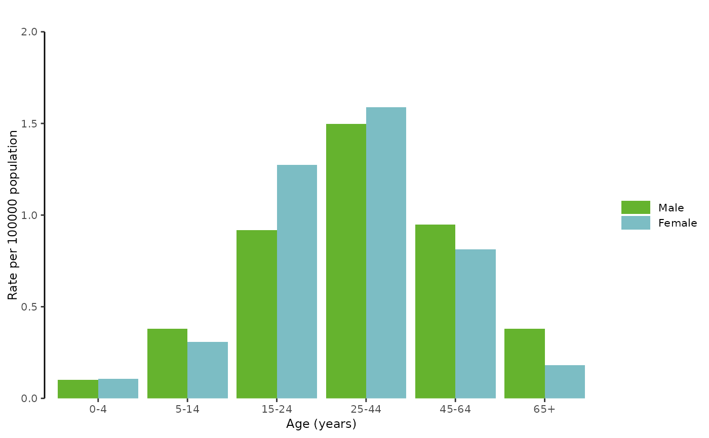

Get disease-specific age and gender bar graph
getAgeGender.RdFunction returning the age and gender bar graph that will be included
in the epidemiological report at the bookmark location 'BARGPH_AGEGENDER'
of the template report.
The bar graph presents the distribution of cases at EU/EEA level using either:
AG-COUNT: The number of cases by age and genderAG-RATE: The rate per 100 000 cases by age and genderAG-PROP: The proportion of cases by age and genderA-RATE: The rate per 100 000 cases by age only
The choice of the type of bar graph is set in the report parameters table AERparams.
(see ECDC reports
https://www.ecdc.europa.eu/en/publications-data/monitoring/all-annual-epidemiological-reports)
Usage
getAgeGender(
x = EpiReport::DENGUE2019,
disease = "DENGUE",
year = 2019,
reportParameters = EpiReport::AERparams,
geoCode = "EU_EEA31",
index = 1,
doc
)Arguments
- x
dataframe, raw disease-specific dataset (see specification of the dataset in the package vignette with
browseVignettes(package = "EpiReport")) (defaultDENGUE2019)- disease
character string, disease code (default
"DENGUE"). Please make sure the disease code is included in the disease-specific dataset x in theHealthTopicCodevariable.- year
numeric, year to produce the graph for (default
2019). Please make sure the year is included in the disease-specific dataset x in theTimeCodevariable.- reportParameters
dataframe, dataset including the required parameters for the graph and report production (default
AERparams) (see specification of the dataset in the package vignette withbrowseVignettes(package = "EpiReport"))- geoCode
character string, GeoCode to run the analysis on (default
"EU_EEA31")- index
integer, figure number
- doc
'Word' document (see
'officer'package) in which to add the graph at the bookmark location. If doc is missing,getAgeGenderreturns theggplot2object.
See also
Global function for the full epidemilogical report: getAER
Required Packages: ggplot body_replace_text_at_bkm
Internal functions: plotBarGrouped (use of plotAgeGender discouraged)
plotBar (use of plotAge discouraged)
EcdcColors
Default datasets: AERparams
Examples
# --- Plot using the default dataset
getAgeGender()

# --- Plot using external dataset
# --- Please see examples in the vignette
browseVignettes(package = "EpiReport")
#> No vignettes found by browseVignettes(package = "EpiReport")